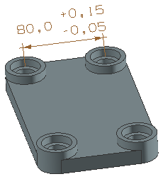

在部件导航器的模型视图节点下方，右击 DIMENSION 并选择编辑视图。
在 PMI 搜索对话框中准则组下方的列表子组中，选择准则 1，然后点击尺寸详细信息。
在公差组中，将上限公差更改为大于(>)0.1400。
点击确定。
在 PMI 搜索对话框的搜索组中，点击执行搜索。
匹配搜索准则的尺寸将显示在匹配 PMI 列表框中：
Parallel Dimension (1)
注意到工作视图仍然是 Dimension。
在匹配 PMI 列表框中，选择 Parallel Dimension (1)。
由于选定的 PMI 对象没有显示在图形窗口中，因此将会打开一个信息窗口，显示更多关于该平行尺寸的信息。
关闭信息窗口。
在设置组的模型视图名输入框中键入 Dimension_2。
在结果组中，点击另存为模型视图。
您的工作视图将变为新定义的视图。

关闭 PMI 搜索对话框。
关闭部件。